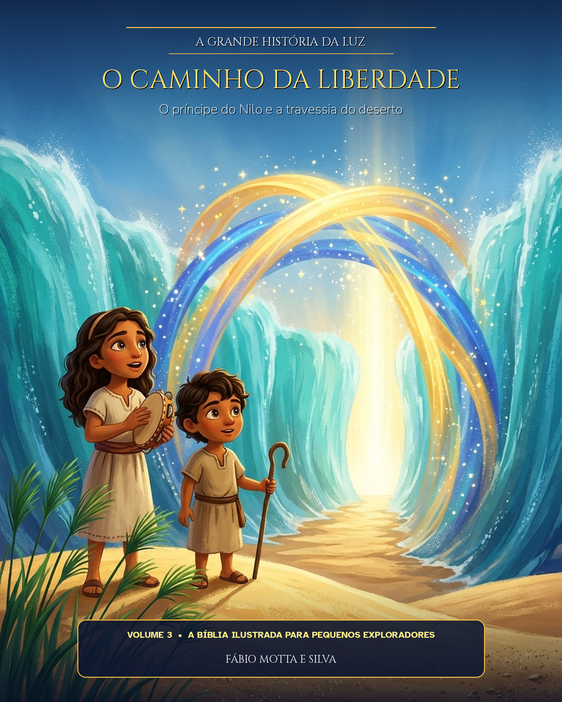

Volume 1 • 24 Páginas Ilustradas
Faça-se a Luz
O começo de todas as histórias (Gênesis 1 a 11): O despertar do Cosmos, o Jardim das Águas Vivas, a escolha no Éden, Caim e Abel, a Grande Arca de Noé e o Zigurate de Babel.
A Bíblia Ilustrada para Pequenos Exploradores — Fidelidade Bíblica, Reconstrução Histórica e Estética Cinematográfica 3D (Fiat Lux)
O começo de todas as histórias (Gênesis 1 a 11): O despertar do Cosmos, o Jardim das Águas Vivas, a escolha no Éden, Caim e Abel, a Grande Arca de Noé e o Zigurate de Babel.
Os amigos que caminharam olhando para o céu (Gênesis 12 a 50): O chamado de Abraão e Sara, o sorriso do bebê Isaque, a Escada de Luz de Jacó, a túnica colorida de José e o abraço do perdão no Egito.

O príncipe do Nilo e a travessia do deserto (Êxodo a Deuteronômio): O cestinho de Moisés e Miriã no Nilo, a Sarça de Luz no Horebe, a Páscoa, a Travessia do Mar, o Maná no Sinai e o Monte Nebo.
Autor: Fábio Motta e Silva • Use os botões abaixo ou as setas do teclado para folhear as 24 páginas